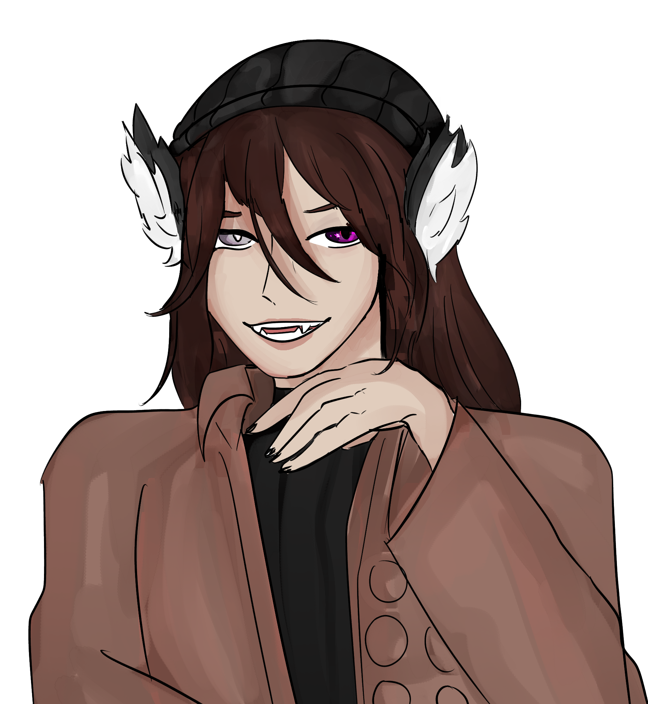

"I deserve to be trapped in this.. globe for eternity.. even if it makes me wish I was dead instead.. I deserve it."
Title: The 2nd Ex
Full Name: Kieran Kensai
Nicknames: None
Birthday: September 17th
Age: 22
Race: Full Mystic Rabbit
Height: 5'10 (Excluding Ears)
Status: Undead, trapped in a globe
Job: Unemployed
Affiliations: Rabbits, Terrin's exs
Early Life
Average high school bully/hero, loved by none but his friends, often put Terrin in danger to "rescue" her
Current Life
Stuck in a globe after failing his mission
Personality
A major jerk who is extremely self centered but does care about certain people who matter to him deep down under his otherwise confident exterior
Skills
Being a jerk, telekinetic powers
Strengths
Tactical
Weaknesses
Has a strong heart for those that really matters to him (easily manipulated), playing with his food
Hobbies
Playing Guitar, Listening to music, picking on people
Loves
His ma and her cooking, Terrin lacking in the clothing department
Likes
The Guitar, getting drunk or high, carrots
Dislikes
Annoying people, anything that Aiden likes, meat
Hates
Eren, Mason, predators
Physical Looks
A grey furred rabbit with brown eyes
Clothes
Leather padded grey cardigan sweater with ripped jeans and combat boots

"....You have a heart.. even after all the sh't we did to you... you still.. have one..."
Status: Ex
How they met: Went to the same school together growing up
Personal Sentiments: Devised many plans to try and get her back once he realizes she was back in town, no matter what. But he has ultimately failed. Still loves her even though he knows she'll never accept him back, he still secretly hopes she will one day
Extras: Misses Terrin in a bikini

"I'm not even anything special, Aiden is the real star of the show out of the two of us.."
Status: Adoptive Brothers
How they met: When his parents adopted him
Personal Sentiments: He hated Aiden for taking up all the attention from his parents and for overshadowing him with how well he did in school which developed a lasting resentment until unwittingly sympathizing with him due to Mason's treatment where he considers if maybe he was too harsh.
Extras: Can't decide whether he hates him or not
"You think I'd be happy about my ex girlfriend being with another guy?"
Status: Neutral Enemy
How they met: At the abandoned school
Personal Sentiments: In utter disbelief that Terrin has fallen for a werewolf, despite it, he's glad he makes Terrin happy
Extras: Hates thinking about him

"He's a.. no good f'cking lying backstabbing b'tch who cares about nothing but himself.."
Status: Enemy
How they met: Approached by Mason and made a deal
Personal Sentiments: Thought that they would work together to take Terrin back but realizes that he doesn't care about anybody else but her and hates him for messing with Aiden and faking that he killed their parents
Extras: They totally fecked
- He in da globe